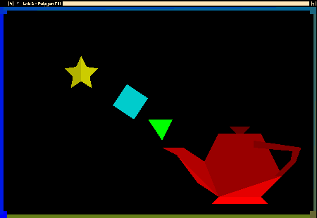

In this course, you will implement some of the 2D drawing routines we have been discussing in class. This will help improve your understanding of these algorithms.
This assignment involves polygon filling. You will implement the scanline polygon fill algorithm discussed in class. You have the option of doing this assignment in Python, C, or C++.
As with the line drawing assignment, the programming environment that you will use for this assignment is a set of simple modules with implementations in C, C++, and Python. You are free to use any of the implementations. Note that modules for the Python and C/C++ versions have slightly different names. In the list below, the names of the Python modules are provided first The modules include:
in addition, the C/C++ versions contain the following auxillary files:
Buffers - a support module providing OpenGL vertex and element buffer support.
ShaderSetup - a support module that handles shader program compilation and linking.
shader.vert, shader.frag - simple GLSL 1.50 shaders.
alt.vert, alt.frag - simple GLSL 1.50 shaders.
The C version includes a module named FloatVector which provides an extensible vector holding floating-point values. Both the C and C++ versions include a file named header.mak for use with the gmakemake program on our systems to create a Makefile to simplify compilation and linking of the program.
The only module that you will need to modify is the Rasterization / Rasterizer class. For this assignment, you will need to complete the method drawPolygon(), implementing the scanline polygon fill algorithm. In your implementation, you need only make use of the method setPixel() on the simpleCanvas / Canvas object passed in as a parameter in order to manipulate the pixels on the canvas. The prototype for the drawPolygon() method varies a bit between languages
Where x and y are arrays containing the coordinates of the polygon to be drawn, and n is the number of vertices in the polygon (and, as such, indicates the size of the two coordinate arrays).
You are free to add additional members, methods, and data structures to Rasterization / Rasterizer as you see fit; however, you cannot modify the simpleCanvas / Canvas module or the fillTest / fillMain driver program.
Here is the drawing that will be produced by the program:

With the exception of the green triangle and the blue quad, all other objects (including the borders) are drawn as multiple polygons. Furthermore, each polygon is drawn using a different color to make it easier to identify problem areas in your implementation. See the fillTest / fillMain driver program for full details on the various shapes.
The programming framework for this assignment (lab2-corrected.zip) is available as a ZIP archive which is found in the CONTENT->Assignment Materials area of mycourses and can be accessed by clicking here.
The ZIP archive contains a folder named lab2; under that are subfolders c, c++, and python and, which contain the obvious things. In the C and C++ folders you'll find a file named header.mak, for use on the CS systems to help you generate a Makefile that will compile and link your program with the libraries used by the framework. See the contents of header.mak for details on how to do this. There is also a subfolder named misc which contains a shellscript named compmac for use of the C/C++ version on Mac systems.
The assignment uses the same underlying framework as in the Assignment 1 - Line Drawing, please be sure that all the proper libraries and toolkits, as specified in that writeup, are installed.
Your routines will be tested using a set of driver programs; some of them may be different from the driver found in the framework archive. Submit only your modified Rasterizer code and any other supporting code you write - do not submit the driver program or other source code from the framework. If you have additional supporting code (e.g., data structures or classes), you may either put them in the Rasterizer source files or submit them as additional source files.
If you are working in C++, your implementation must be in a file named Rasterizer.cpp. If your implementation requires making changes to the Rasterizer.h file (e.g., you have added data members or member functions to the class declaration), you should submit that file along with Rasterizer.cpp. If you make changes to the header.mak file, you may submit your modified file as well.
Similarly, if you are working in C, your implementation must be in a file named Rasterizer.c. Again, if your implementation requires making changes to the Rasterizer.h file, you should submit that file along with Rasterizer.c. If you make changes to the header.mak file, you may submit your modified file as well.
If you are working in Python, your implementation must be in a file named Rasterization.py. Please include any additional auxiliary files that may have created with the submission.
The minimum acceptance test is that your code must be complete - that is, it must compile and link cleanly when submitted. Submissions will not be accepted if they fail to compile and link cleanly. (Warning messages from the compiler are acceptable, but not fatal errors.)
Turn in only your C, C++, or Python implementation file(s) described above and an optional README file. Files can be placed in the Dropbox titled Assignment 2 - Polygon Fill.
drawPolygon Implementation (40 points)
Other Considerations (10 points)
Java applets are available online to help you visualize polygon filling.
You are guaranteed that the dimensions of the drawing window will be 901x601 pixels.
The elements of the x[] and y[] arrays are paired up; that is, vertex 0 is (x[0],y[0]), vertex 1
is (x[1],y[1]), etc. You are guaranteed that there will be n coordinates in each array. You are also guaranteed that the vertices given to drawPolygon() are listed in order around the circumference of the polygon (that is, adjacent vertices in the arrays form one edge of the polygon, with the final edge connecting the last vertex to the first vertex); however, the list may be in either clockwise or count er- clockwise order.
It is common knowledge that code for the scanline fill algorithm is freely available on the Internet and in textbooks. You are free to use these references as a guide, but please do not simply cut and paste code from any of these sources.
Refer back to the Assignment 0 - Hello OpenGL (C/C++ version) programming assignment for information about obtaining and installing the GLFW and/or GLEW libraries (for C/C++) and to Assignment 1 - Line Drawing for info on setting up your Python environment.Do not make any changes to the function prototypes. This means that your implementations must match the prototypes exactly in terms of number, types, and order of parameters. The reason for this is that the test programs assume that your implementations match those prototypes; if you make changes, there will be compilation errors, and even if the test programs link, they almost certainly won't execute correctly (which means you'll lose substantial amounts of credit for incorrect program pe rformance).